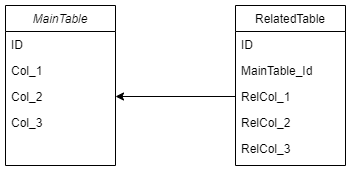

TODO
Database class is interface between your application and other TOTI Database parts.
Database constructor requires two parameters: DatabaseConfig and Logger (Log4j2).
Constructor parameters:
Optionally, another parameters can be add:
config.setProperty(optionName, value);
SQL query can be executed in two ways: with applyQuery or applyBuiler. Both require function as parameter. The function get Connection, resp. QueryBuilder as parameter. Value the function returns, applyQuery (applyBuilder) returns.
In example, both methods return Integer but result value is generic.
Database database = ...;
// execute SQL
int result = database.applyQuery((connection)->{
// you can close Statement, ResultSet,.., but never close connection
/*
// your code here, f.e.:
try (Statement statement = connecion.createStatement()) {
// ...
}
*/
return 0;
});
// execute with QueryBuilder
int result = database.applyBuilder((builder)->{
/*
// your code here, f.e.:
builder.select(*).from("Table1").fetchAll();
*/
return 1;
});
Everything inside applyQuery and applyBuilder is inside transaction.
Don't close Connection. It will be returned to pool.
Migration function is described here. With Database you can simply call migrate function. There is createDbIfNotExists method, too. This method create new database if not exists.
Query Builder composes SQL query by calling adequate methods. Another word, this package is Database Abstraction Layer.
You can create new instance of each builder or you can use QueryBuilder class. This class is factory for builders. Remember all builders created from one QueryBuilder have same Connection. QueryBuilder allows you begin, commit or rollback transaction.
Each builder can be executed several times.
Supported databases:
Some queries can be parametrized. See example:
QueryBuilder builder = ...;
builder.select("*")
.from("myTable")
.where("id > :id")
.addParameter(":id", 123);
All parameters are named. That is usefull if you need use one value moretimes. All values are escaped. If you wish add not escaped value, use addNotEscapedParameter method.
Values passed to addParameter or addValue are escaped.
Join type is realized with Join enum.
QueryBuilder builder = ...;
builder.select("*")
.from("FirstTable", "f")
.join("SecondTable", "s", Join.LEFT_OUTER_JOIN, "s.id = t.second_id");
Some builders contains where and orWhere method. Everything inside *where method parameter will be automatically inside '()'.
For creating select statement. Result is returned with: fetchSingle (returns one DictionaryValue from first row and first column or null), fetchRow (returns MapDictionary of values on first row), fetchRow(Class<T>) (returns new instance of Class<T> parsed from row using Mapper or null), fetchAll (returns list of MapDictionary, one item - one row), fetchAll(consumer) (returns list, each item is result of given consumer applied on corresponging row) and fetchAll(consumer, consumer) (returns map, each item is result of first callback - key - and second callback - value - applied on corresponging row).
Instead of select string, you can pass another SelectBuilder. It be usead as subselect.
builder.select("a.id a_id", "b.id b_id", "b.number")
.from("Table1 a")
.join("Table2 b", Join.INNER_JOIN, "a.id = b.a_id")
.join(
builder.select("max(id) as max_id, name").from("Table1").groupBy("name"),
"c", // name of subselect
Join.LEFT_OUTER_JOIN,
"a.id = c.max_id"
)
.where("a.id < :id")
.where("b.id < :id")
.where("b.number in (:in)")
.orWhere("c.name != :name")
.orderBy("a.id")
.limit(10, 5)
.addParameter(":id", 18)
.addParameter(":name", "admin")
.addParameter(":in", Arrays.asList(1,2,3,4));
SQL without translated parameters:
SELECT *
FROM Table1 a
JOIN Table2 b ON a.id = b.a_id
LEFT JOIN (
SELECT max(id) as max_id, name
FROM Table1
GROUP BY name
) c ON a.id = c.max_id
WHERE (a.id < :id)
AND (b.id < :id)
AND (b.number in (:in))
OR (c.name != :name)
ORDER BY a.id
LIMIT 10 OFFSET 5
SQL with translated parameters
SELECT *
FROM Table1 a
JOIN Table2 b ON a.id = b.a_id
LEFT JOIN (
SELECT max(id) as max_id, name
FROM Table1
GROUP BY name
) c ON a.id = c.max_id
WHERE (a.id < 18)
AND (b.id < 18)
AND (b.number in (1,2,3,4))
OR (c.name != 'admin')
ORDER BY a.id LIMIT 10 OFFSET 5
For creating update statement. Executed with execute.
builder.update("Table1")
.set("name = :name")
.where("id = :id")
.addParameter(":id", 18)
.addParameter(":name", "user18")
SQL without translated parameters:
UPDATE Table1
SET name = :name
WHERE (id = :id)
SQL with translated parameters
UPDATE Table1
SET name = 'user18'
WHERE (id = 18)
For creating insert statement. Method addValue escape value. Not escaped value can be added with addNotEscapedValue. Executed with execute, returns DictionaryValue of created id or -1 if no id generated.
builder.insert("Table2")
.addValue("id", 123)
.addValue("number", 12.8)
.addValue("name", "Item 8")
SQL:
INSERT INTO Table2 (number, name, id)
VALUES (12.8, 'Item 8', 123)
For creating delete statement. Executed with execute.
builder.delete("Table1")
.where("id = :id")
.addParameter(":id", 1)
SQL without translated parameters:
DELETE FROM Table1
WHERE (id = :id)
SQL with translated parameters
DELETE FROM Table1
WHERE (id = 1)
For creating table. With addColumn method you specify column name, type and settings (primary key, auto incement, ...). Optionaly you can specify default value. Default value is not escaped. Executed with execute.
builder.createTable("Table3")
.addColumn("id", ColumnType.integer(), ColumnSetting.PRIMARY_KEY, ColumnSetting.AUTO_INCREMENT)
.addColumn("name", ColumnType.string(10)) // no addition settings
.addColumn("is_used", ColumnType.bool(), true, ColumnSetting.NOT_NULL) // defaut value is 'true'
SQL:
CREATE TABLE Table3 (
id INT AUTO INCREMENT,
name VARCHAR(10),
is_used BOOLEAN DEFAULT true NOT NULL,
PRIMARY KEY (id)
)
For altering table. With addColumn method you specify column name, type and settings (primary key, auto incement, ...). Optionaly you can specify default value. Default value is not escaped. Executed with execute.
builder.alterTable("Table3")
.addColumn("cost", ColumnType.integer())
.renameColumn("is_used", "used", ColumnType.bool())
SQL:
ALTER TABLE Table3
ADD cost INT,
CHANGE COLUMN is_used used BOOLEAN
For deleting table. Executed with execute.
builder.deleteTable("Table3")
SQL:
DROP TABLE Table3
For creating view. Executed with execute.
builder.createView("table1_table2_view")
.select("*")
.from("Table1", "a")
.join("Table2", "b", Join.INNER_JOIN, "a.id = b.a_id")
.join(
builder.select("max(id) as max_id, name").from("Table1").groupBy("name"),
"c", // name of subselect
Join.LEFT_OUTER_JOIN,
"a.id = c.max_id"
)
.where("a.id < :id")
.where("b.id < :id")
.where("b.number in (:in)")
.orWhere("c.name != :name")
.orderBy("a.id")
.limit(10, 5)
.addParameter(":id", 18)
.addParameter(":name", "admin")
.addParameter(":in", Arrays.asList(1,2,3,4))
SQL without translated parameters:
CREATE VIEW table1_table2_view AS
SELECT *
FROM Table1 a
JOIN Table2 b ON a.id = b.a_id
LEFT JOIN (
SELECT max(id) as max_id, name
FROM Table1
GROUP BY name
) c ON a.id = c.max_id
WHERE (a.id < :id)
AND (b.id < :id)
AND (b.number in (:in))
OR (c.name != :name)
ORDER BY a.id
LIMIT 10 OFFSET 5
SQL with translated parameters
CREATE VIEW table1_table2_view AS
SELECT *
FROM Table1 a
JOIN Table2 b ON a.id = b.a_id
LEFT JOIN (
SELECT max(id) as max_id, name
FROM Table1
GROUP BY name
) c ON a.id = c.max_id
WHERE (a.id < 18)
AND (b.id < 18)
AND (b.number in (1,2,3,4))
OR (c.name != 'admin')
ORDER BY a.id
LIMIT 10 OFFSET 5
For altering view. Executed with execute.
builder.alterView("table1_table2_view")
.select("*")
.from("Table1", "a")
.join("Table2", "b", Join.INNER_JOIN, "a.id = b.a_id")
.where("a.id < :id")
.where("b.id < :id")
.where("b.number in (:in)")
.orWhere("c.name != :name")
.orderBy("a.id")
.limit(10, 5)
.addParameter(":id", 18)
.addParameter(":name", "admin")
.addParameter(":in", Arrays.asList(1,2,3,4))
SQL without translated parameters:
-- see, MySql has not alter view statement, so delete and create again is used
DROP VIEW table1_table2_view;
CREATE VIEW table1_table2_view AS
SELECT *
FROM Table1 a
JOIN Table2 b ON a.id = b.a_id
WHERE (a.id < :id)
AND (b.id < :id)
AND (b.number in (:in))
OR (c.name != :name)
ORDER BY a.id
LIMIT 10 OFFSET 5
SQL with translated parameters
-- see, MySql has not alter view statement, so delete and create again is used
DROP VIEW table1_table2_view;
CREATE VIEW table1_table2_view AS
SELECT *
FROM Table1 a
JOIN Table2 b ON a.id = b.a_id
WHERE (a.id < 18)
AND (b.id < 18)
AND (b.number in (1,2,3,4))
OR (c.name != 'admin')
ORDER BY a.id
LIMIT 10 OFFSET 5
For deleting view. Executed with execute.
builder.deleteView("table1_table2_view")
SQL:
DROP VIEW table1_table2_view
Allows union, intersect and except of SelectBuilers. Result is returned in same was as in select. Each builder can has own parameters. Except this, MultipleSelectBuilder has global parameters common for all batches.
builder
.multiSelect(
builder.select("*")
.from("Table1")
.where("name != :name")
.andWhere("id > :id")
.addParameter(":name", "Table1-name")
)
.union(
builder.select("*")
.from("Table2")
.where("name != :name")
.andWhere("id > :id")
.addParameter(":name", "Table2-name")
)
.addParameter(":id", 42)
.orderBy("id")
SQL without translated parameters:
SELECT *
FROM Table1
WHERE (name != :name)
AND (id > :id)
UNION
SELECT *
FROM Table2
WHERE (name != :name)
AND (id > :id)
ORDER BY id
SQL with translated parameters
SELECT *
FROM Table1
WHERE (name != 'Table1-name')
AND (id > 42)
UNION
SELECT *
FROM Table2
WHERE (name != 'Table2-name')
AND (id > 42)
ORDER BY id
Execute SQL procedure with parameters. Also output parameter can be registered.
Not all database engine support returning database procedure;
Example
builder.call("no_parameter_procedure")
builder.call("input_parameter_procedure")
.addInputParameter(123)
builder.call("output_parameter_procedure")
.addOutputParameter("out1", String.class)
builder.call("returning_procedure")
.registerProcedureOutput()
Concat more builders into one statement (one builder - one batch) and execute at once. Each builder can has own parameters. Except this, BatchBuilder has global parameters common for all batches.
builder.batch()
.addBatch(
builder.update("Table1")
.set("name = :name")
.where("id = :id")
.addParameter(":name", "Table1-Name")
)
.addBatch(
builder.update("Table2")
.set("name = :name")
.where("id = :id")
.addParameter(":name", "Table2-Name")
)
.addParameter(":id", 42)
SQL without translated parameters:
UPDATE Table1
SET name = :name
WHERE (id = :id);
UPDATE Table2
SET name = :name
WHERE (id = :id);
SQL with translated parameters
UPDATE Table1
SET name = 'Table1-Name'
WHERE (id = 42);
UPDATE Table2
SET name = 'Table2-Name'
WHERE (id = 42);
Group of some SQL functions. Returns given function in correct spelling for given SQL platform.
QueryBuilder provides some prepared queries.
In examples will be used following database.

get method returns one DatabaseRow (or null) in given table by given column.
QueryBuilder builder = ....;
// get all columns (select *)
DatabaseRow row = builder.get("MainTable", "ID", 42);
// or get specified columns
DatabaseRow row = builder.get("MainTable", "ID", 42, "Col_1", "Col_2");
getAll method returns all
QueryBuilder builder = ....;
// get all columns (select *)
List<DatabaseRow> rows = builder.getAll("MainTable");
// or get specified columns
List<DatabaseRow> rows = builder.getAll("MainTable");
// or change DatabaseRow to given class
List<T> rows = builder.getAll("MainTable", (row)->{
// here return new T
});
getAllBy methods returns all items by specific column.
QueryBuilder builder = ....;
// get all columns (select *)
List<DatabaseRow> rows = builder.getAllBy("MainTable", "Col_1", "some-value");
// or get specified columns
List<DatabaseRow> rows = builder.getAllBy("MainTable", "Col_1", "some-value");
// or change DatabaseRow to given class
List<T> rows = builder.getAllBy("MainTable", "Col_1", "some-value", (row)->{
// here return new T
});
getAllIn methods returns all items by specific column (with list of values).
QueryBuilder builder = ....;
// get all columns (select *)
List<DatabaseRow> rows = builder.getAllIn("MainTable", "Col_2", Arrays.asList("some-value-1", "some-value-2"));
// or get specified columns
List<DatabaseRow> rows = builder.getAllIn("MainTable", "Col_2", Arrays.asList("some-value-1", "some-value-2"));
// or change DatabaseRow to given class
List<T> rows = builder.getAllIn("MainTable", "Col_2", Arrays.asList("some-value-1", "some-value-2"), (row)->{
// here return new T
});
delete methods delete rows with speficied column. Returns count of affected rows.
QueryBuilder builder = ....;
int affectedRows = builder.delete("MainTable", "ID", 42);
update method update rows specified by column. New values are stored in Map - keys are column names and values are values. Values are escaped but keys not.. Method returns count of affected rows.
QueryBuilder builder = ....;
Map<String, Object> data = ....;
int affectedRows = builder.update("MainTable", "ID", 42, data);
insert method insert one new row and returns generated id as DictionaryValue. New values are stored in Map - keys are column names and values are values. Values are escaped but keys not..
QueryBuilder builder = ....;
Map<String, Object> data = ....;
DictionaryValue id = builder.insert("MainTable", data);
saveRelation methods update/create/delete rows in related table.
QueryBuilder builder = ....;
Map<String, Object> data = ....; // data in RelatedTable
builder.saveRelation("RelatedTable", "ID" /*from RelatedTable*/, "MainTable_id", 42, data);
Database migrations or simply migrations are tool allowing you keep database in same state on production and on develop with your colleagues. In migration folders are scripts for updating current database. Every structure change have to by in this scripts so after migrating you have your database up to date to current code. After migrating each script this tool make note to special table and not migrate this script again.
There is name convention for migration files: id__description. id must be unique for folder, cannot contains '__'. Suggested id format is: yyyy_mm_dd_i where i is index of migration that day.
You can use more folders (modules) as source for migrations. Folders are executed one after one in order they are defined. Folders can be inside or outside classpath. Java migrations outside classpath have to be builded (not .java but .class).
Standart Java class. Has to implement Migration interface.
Simple SQL script. .sql is required as extension.
Java or SQL migration that is executed every time. On the end of other migrations, the always migrations are executed. Very helpful f.e. for views. On view change, you not create new migration but just change view in Always migration and you can see git changes.
A migration became Always migration if id of the migration contains 'ALWAYS' (upper case).
NOTE: MigrationTool in this example is created manualy, but best practise is use Database class for creating and migrating database.
QueryBuilder builder = ...;
Logger logger = ...;
MigrationTool tool = new MigrationTool(
Arrays.asList("path/to/first/module", "path/to/second/module"), // folders
builder, // query builder for java migrations
logger // see JI Common
);
tool.migrate();
DatabaseTestCase (DTC) is usefull when you need test something with database. Before each test, DTC apply all migrations and insert test data. After each test, DTC clean database.
The test is standart jUnit5 test. Test class has to extends DatabaseTestCase. Constructor requires DatabaseConfig (from Database) and optionaly Logger (Log4j2).
Instance of Database class is available in test class on protected parameter database or with method getDatabase. Do not create any other instances of Database in your DTCs.
DTC uses @BeforeEach and @AfterEach methods. If you need use it too, override before or after. Always call parent method.
All queries run in super transaction that is never commited. No exception can broke it. But calling System.exit can make unexpected states.
DatabaseTestCase has one abstract method: getDataSet. Here you define startup state of your database before each test. Dataset is common for all tests of one test class. If you need some data only for one test, call alterDataSet on the first line of your test.
public class Example extends DatabaseTestCase {
public Example() {
super(/* DatabaseConfig */);
}
/**
* dataset common for all test
* can returns empty list
*/
@Override
protected List<Table> getDataSet() {
return Arrays.asList(
new Table("Table1")
.addRow(
Row.insert()
.addColumn("id", 1)
.addColumn("name", "Name #1")
)
.addRow(
Row.insert()
.addColumn("id", 2)
.addColumn("name", "Name #2")
),
new Table("Table2")
.addRow(
Row.insert()
.addColumn("id", 1)
.addColumn("value", "Value #1")
)
.addRow(
Row.insert()
.addColumn("id", 2)
.addColumn("value", "Value #2")
)
);
}
/**
* used common dataset only
*/
@Test
public void test1() {
// ...
}
/**
* common dataset updated with own data
*/
@Test
public void test2() throws SQLException {
alterDataSet(Arrays.asList(
new Table("Table1")
.addRow(
Row.insert() // add one more row to Table1
.addColumn("id", 3)
.addColumn("name", "Name #3")
),
new Table("Table2")
.addRow(
Row.update("id", 2) // update row with id=2
.addColumn("value", "another value")
)
));
// ...
}
}